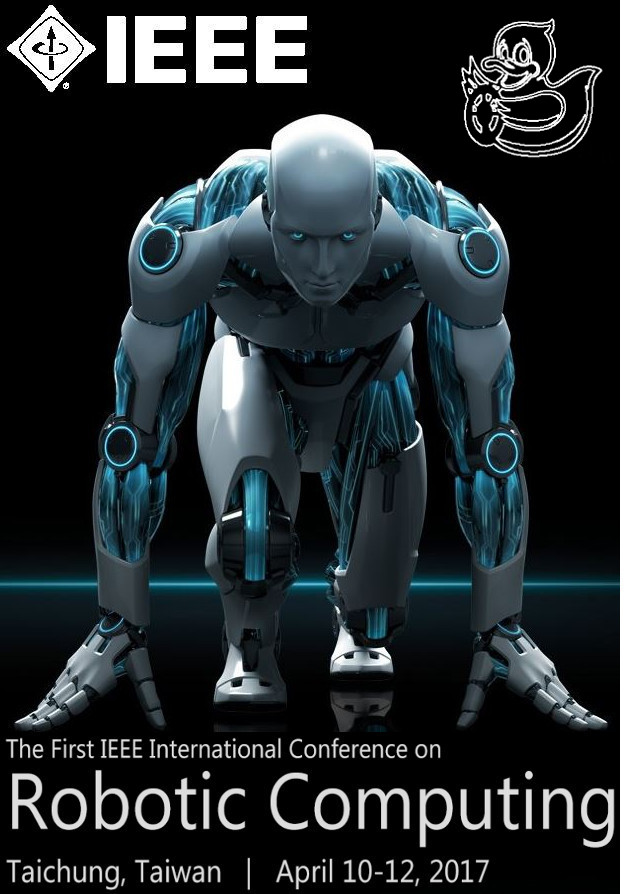
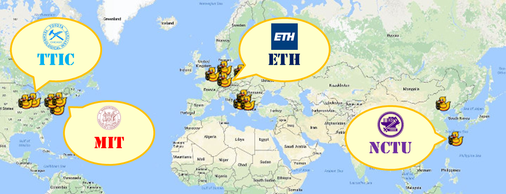

|  |
Tutorial in Robotic Computing Conference This tutorial is an introductory effort to bring together robotic computing community to discuss educational paths, industrial needs, and identify the challenges of future autonomy. We will introduce the Duckietown (http://duckietown.mit.edu), an open, reproducible, and inexpensive robotic education and research platform. The vehicles (Duckiebots) include onboard $15 monocular camera and a $35 Raspberry Pi computer, and a miniaturized city (Duckietown) with roads, signage, and obstacles is designed to tackle autonomous driving problems and behaviors, such lane following. We then further introduce the efforts at Duckietown NCTU (http://duckietown.nctu.edu.tw/) of developing fundamental and supplemental materials, especially for middleware infrastructures (Robot Operation System, ROS). Finally, a panel discussion will focus on: 1) promoting and adopting the platform for the robotic computing community, 2), identifying future directions combining embedded computing, control theory, and information and communication technology (ICT) research, and 3) tackling real-world problems of industrial needs and better human life. |
|
Reference and Links: |
|
 Link: http://duckietown.mit.edu/outreach.html Massachusetts Institute of Technology - MIT 2.166: Where it all started! The first Duckietown class was at MIT in 2016 National Chiao Tung University - ICN9005 Robotic Vision: The "first branch of Duckietown" was started in 2016 in NCTU led by Prof Nick Wang Toyota Technological Institute at Chicago - Matthew Walter's graduate class at TTIC ETH Zurich - Frazzoli and Censi's graduate class at ETH Zurich |
Robotic Computing Conference 2017 Tutorial Photo |

|
Proposers and Lecturers |
Assistants |
|
● Tzu-Kuan 'Brian' Chuang |
|
● Che-Ming 'Jack' Lin |
|
● Ni-Ching 'Monica' Lin |
|
● Xin He 'Kenny' Su |
Schedule |
|
Sponsored by |

|
| © H.C. Wang | Web Templates by gwsolution |